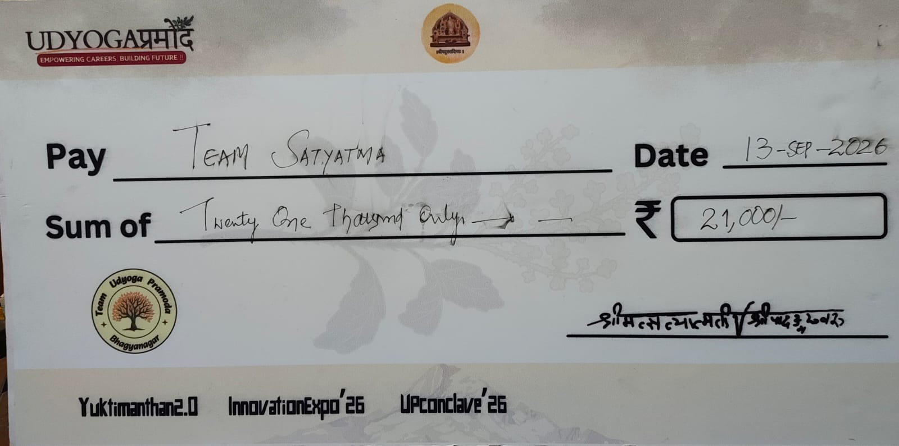
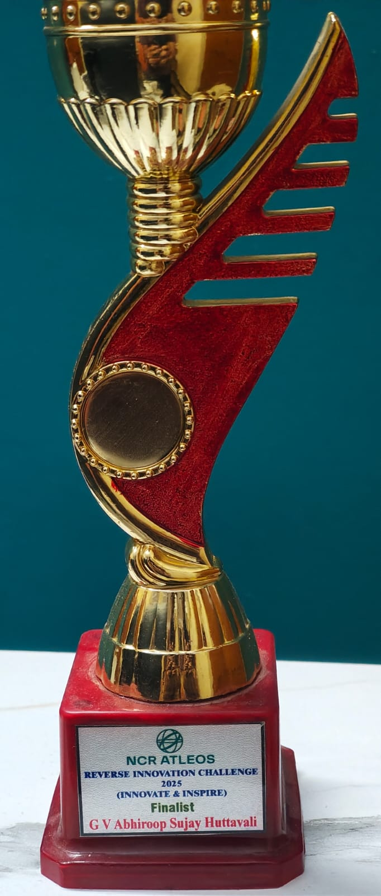
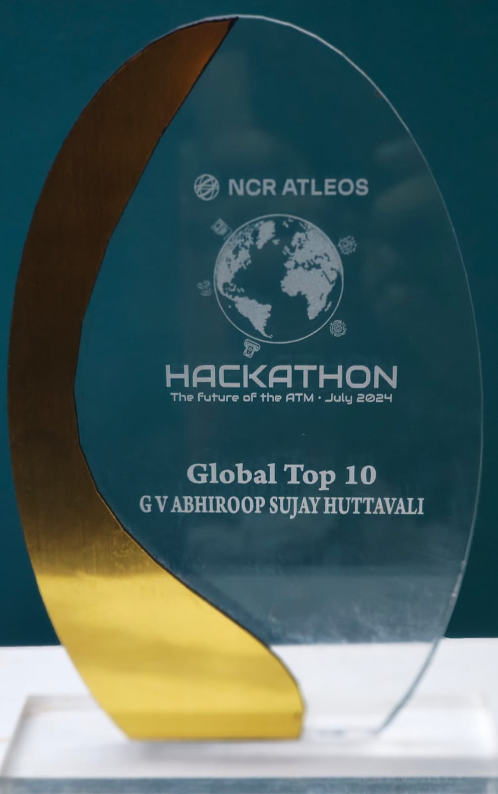

G V Abhiroop Sujay H
Software Engineer · Applied AI
Achievements
Winner & FinalistHyderabad Innovation Challenge 2025 · NCR Atleos Reverse Innovation Challenge 2025
Global Top 10NCR Atleos Hackathon 2024
Runner-up ×2Yuktimanthan 1.0 & 2.0, team lead
Summary
Software Engineer with 2+ years of experience in software development and AI engineering. Currently working at NCR Atleos on ATM software, with hands-on experience in Python, machine learning, computer vision, LLMs, RAG, and agentic AI. I combine software engineering fundamentals with practical experience developing and integrating AI technologies into applications.
Experience
Software Engineer · NCR Atleos
02/2024 – Present- Build production software for enterprise ATM applications.
- Built a RAG system (LangChain, ChromaDB) that turns plain-English requests into ready-to-run automation keywords.
- Built AI prototypes: AI Virtual Teller (Global Top 10, 2024) and ATM Fraud Guard (Finalist, 2025).
AI Projects
CircuitMind AI Agentic procurement for semiconductor manufacturing
GitHub ↗Runner-up, Yuktimanthan 2.0 · Team lead
- Converts external supply-chain disruptions into actionable procurement plans, tracing impact across BOMs and inventory to recommend part numbers, quantities, suppliers and dates.
- Six specialised agents orchestrated with LangGraph, using MCP for controlled access to enterprise tools and data.
- JSON-schema constrained decoding, a deterministic rule engine for part compatibility, and a human-in-the-loop interrupt before any procurement action.
Stack: LangGraph, MCP, Python, FastAPI, Next.js, PostgreSQL, Groq (gpt-oss-120b), Holt-Winters forecasting

ATM Fraud Guard Real-time threat detection
Private repoWinner, Hyderabad Innovation Challenge 2025 · Finalist, NCR Atleos Reverse Innovation Challenge 2025
- Three vision models run concurrently at the ATM: retina matching against a convicted-criminal database, pose classification on a separate thread, and mask detection.
- When a threat is flagged, the system automatically alerts the nearest police station.
Stack: Python, PyTorch, YOLOv8, OpenCV, MediaPipe, multithreading

AI Virtual Teller Conversational banking
Private repoGlobal Top 10, NCR Atleos Hackathon 2024
- Customers speak naturally; OpenAI Whisper transcribes the request and a fine-tuned Llama intent classifier maps it to a banking operation.
- The teller executes the transaction on the customer's behalf: withdrawals, transfers, balance checks.
Stack: Python, OpenAI Whisper, fine-tuned Llama, intent classification, transaction APIs

Manual-to-Keyword RAG Automation from plain English
- Takes a plain-English query, retrieves matching entries from the automation keyword library, and generates ready-to-run automation keywords, cutting manual lookup and translation effort.
Stack: Python, LangChain, ChromaDB, FastAPI, embeddings, LLM
Swach Campus Drone-based trash detection
GitHub ↗College project
- Users pick waypoints in a web app; the drone flies to each and captures an image.
- A pre-trained YOLOv5 model runs inference; any detection above 0.5 confidence automatically raises a ServiceNow ticket for the facilities team.
Stack: YOLOv5, PyTorch, Node.js, web app, drone waypoint missions, ServiceNow
Skills
- LLMs & agents
- LangGraph, MCP, LangChain, multi-agent orchestration, constrained decoding, human-in-the-loop
- RAG
- ChromaDB, embeddings, retrieval pipelines, grounded generation
- NLP & speech
- Fine-tuned Llama, intent classification, OpenAI Whisper
- Computer vision
- PyTorch, YOLOv5, YOLOv8, OpenCV, MediaPipe
- Engineering
- Python, FastAPI, Node.js, Angular, Next.js, PostgreSQL, ServiceNow integration
- Leadership
- Led hackathon teams to runner-up at Yuktimanthan 1.0 and 2.0